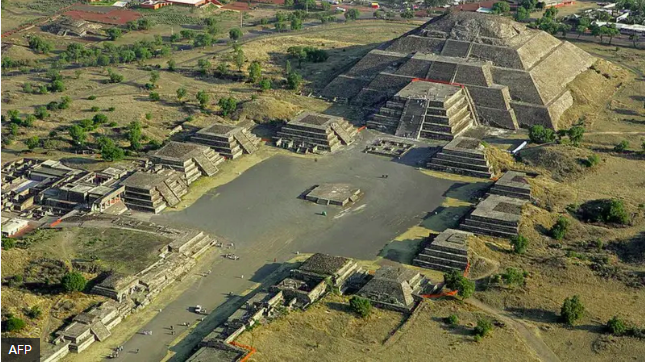

Civilizaciones mesoamericanas
Las civilizaciones mesoamericanas fueron sociedades que se desarrollaron en una región cultural que abarcó el centro y sur de México y partes de Centroamérica. Compartieron algunas características culturales, aunque cada pueblo tuvo su propia historia, organización y tradiciones.
1. Ubicación geográfica
Mesoamérica comprendió diversas regiones con climas y paisajes diferentes. Estas condiciones favorecieron el desarrollo de la agricultura, el comercio y el surgimiento de ciudades y centros ceremoniales.
2. Principales culturas
Cultura olmeca
Se desarrolló principalmente en las tierras bajas del golfo de México. Es conocida por sus enormes cabezas de piedra y sus centros ceremoniales.
Cultura maya
Se extendió por el sureste de México y otras regiones de Centroamérica. Destacó por sus conocimientos matemáticos, sus calendarios y sus sistemas de escritura.
Cultura teotihuacana
Tuvo como centro la ciudad de Teotihuacán, reconocida por sus grandes construcciones, entre ellas las pirámides del Sol y de la Luna.
Cultura mexica
Fundó México-Tenochtitlan en una isla del lago de Texcoco y llegó a dominar una extensa red de territorios mediante alianzas, conquistas y tributos.
3. Organización social y política
Las sociedades mesoamericanas tuvieron distintas formas de gobierno y organización social. En muchas de ellas existieron gobernantes, sacerdotes, comerciantes, artesanos, agricultores y otros grupos con funciones específicas.
4. Economía
La agricultura fue fundamental para numerosas sociedades mesoamericanas. El maíz, el frijol, la calabaza y el chile fueron cultivos importantes. También existieron redes de intercambio comercial entre diferentes regiones.
5. Religión y conocimientos
La religión tuvo un papel importante en muchas culturas. Sus creencias se relacionaban con la naturaleza, los ciclos agrícolas y los cuerpos celestes. Algunos pueblos también desarrollaron calendarios, sistemas de escritura y conocimientos astronómicos y matemáticos.
6. Legado cultural
Las civilizaciones mesoamericanas dejaron un importante legado en la agricultura, la arquitectura, el arte, la alimentación y los conocimientos. Muchas de sus tradiciones y lenguas continúan presentes en comunidades indígenas de México y Centroamérica.